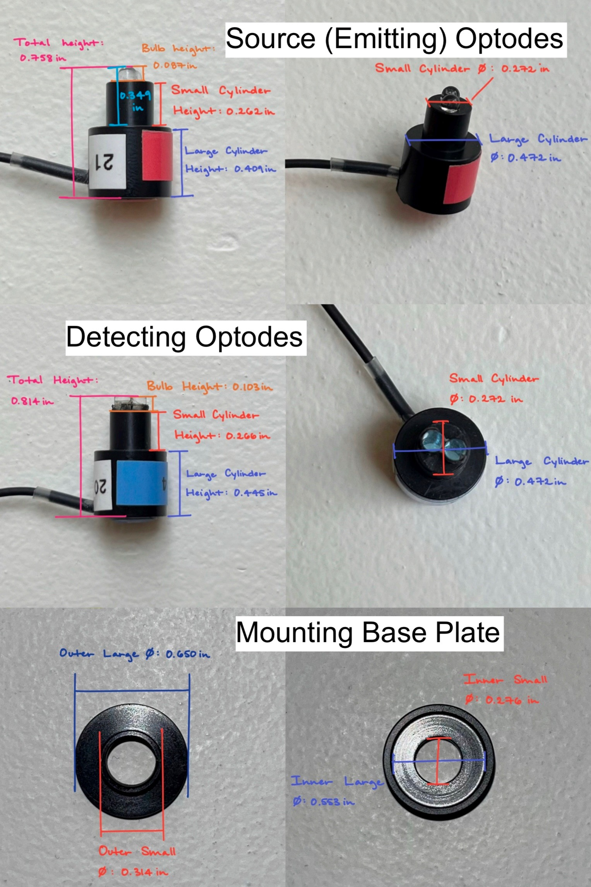
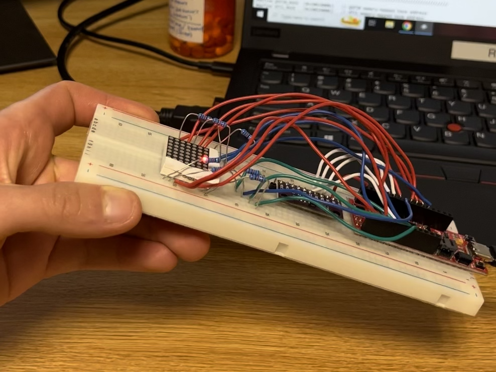

At Harvey Mudd, the General Engineering major is highly robust. Our program consists of three main approaches to tackling Engineering: Systems, Sciences, and Design. The Systems appraoch focuses on how to apply mathematically model general system outputs and functions of their input. The Sciences are intended to give a broad education in engineering, where students explore Chemical and Thermal Processes, Mechanics, Electronic and Magnet Circuits, Computer Architecture, and Material Science. Lastly, the Design field teaches Professional skills necessary to apply theory learned in class. These skills include, teamwork, communication, project management, and design and prototyping. During my time at Mudd, I’ve worked on a variety of interesting projects to complete practical tasks. Below, I’ve listed a few of my favorite Engineering class projects.
By clicking the buttons below, learn more about the What, How, and Results of each project.
E4: Design & Manufacturing
Machinist Hammer
I gained proficiency in basic machining techniques, joined the long hammer-building history of Harvey Mudd College engineers, and discovered a deeper appreciation for machining that led me to working as a shop proctor at the Harvey Mudd Machine Shop. The student Machine Shop is a fundamental resource to many student projects and experiences across the Claremont Colleges.
What?
All Harvey Mudd students in E4 manufacture identical machinist hammers by following specific process routers and tolerances listed in tech drawings.
Crafted a machinist hammer from clear oak, AISI 1015 steel, AISI 4340 steel, and nylon.
How?
Machined head stock to length and specification using lathe and milling operations.
Heat treated hardface and determined HRC Hardness.
Lasercut hammer stand and shaped handle using the bandsaw and spindle sander.
Results
Created a functional hammer with heat treated hard face, well fastened soft face, and smooth handle finish.
Hammer is durable and approved as high quality of manufacturing.
Inspired to become a machine shop proctor and train new users.
Optimizing Neuroimaging Device
Functional Near-Infrared Spectroscopy (fNIRS) is used to monitor brain activity by measuring infrared light (IR) displacemnt in the brain. A key challenge is that thick or dark hair can physically block IR light from reaching the scalp. Our team—Annette Chang, Brock Bownds, and Gabrielle Reynolds—developed three mechanisms to effectively direct IR light from fNIRS to the scalp.
What?
Developed and selected three design alternatives:
Fiber Optic Attachment with Custom Spring Cap threads IR light through thick hair to the scalp.
Hair Moving Pick moves hair away from covering the scalp.
Wider Mounting Base enables more pressure between the scalp and optodes.
How?

Machined prototypes to verify proof of concept and refined iterations based on client input and professor feedback.
Developed comprehen- sive process routers for all prototype designs and documented findings into reports to be shared with the team and the client.
Fostered a welcoming and collaborative environment for all team members.
Results
Improved signal clarity of fNIR device for users with dense hair types (3C, 4A), improving readings from critical to acceptable.
Gained experience arranging and executing client meetings to determine project objectives, constraint, functions, and means.
Applied principles of engineering design and team dynamics to a real-world project.
E79: Engineering Systems
Remotely Operated Vehicle (ROV)
I worked with my lab partner, Brock Bownds, to build an underwater remotely operated vehicle (ROV) to gather depth and temperature data of a designated underwater location at Robert J. Bernard Biological Field Station lake. The purpose of the project was to learn mechanical, thermal, and elecrtrical systems and gain technical skills in mechanical design, sensor integration, and control systems.
What?
Created an ROV with an umbillical cord to measure depth and temperature data at Phake Lake located across Foothill Blvd.
The ROV is fully water- proof and its motor is controlled using P control systems.
How?
Modeled and simulated vertical motion of the ROV using LabView and generated Bode Plots to characterize second order transient response.
Built and tested a circuit that can measure temperture using a thermistor.
Results
Gained hands-on skills breadboarding circuits and soldering compo- nents onto PCBs to create functional sensors.
Our team built an autonomous surface vehicle (ASV) to measure water depth at select surface positions along Baby Beach at Dana Point Harbor, CA. The team—John Simon, Georgia Tai, and Simone Yang—used a combination of electrical and mechanical depth sensing systems: a motor that enabled raising of a winch weight, a Hall effect sensor to count winch spool revolutions, and a pressure sensor.
What?
Built an ASV that measures depth.
When lowered, the Hall effect sensor counts revolutions of the winch spool with a known radius.
When lowered, The pressure sensor can be related to depth via a calibration curve.
When raised, integrating motor-pulling speed with respect to time to find distance.
How?
Researched electrical components to safety design circuitry.
Used power tools to construct a lightweight, buoyant ASV frame.
Iterated Arduino code on the Teensy 4.0 in order to interface all components at specific times.
Results
Gained experience with the fast-pace reality of product development in a real-world environment.
Learned how to effectively manage a project and meet budget and time constraints.
Mapped a depth path from the Baby Beach dock to the shore with low-cost sensors ($50 budget).
E85: Digital Electronics & Comp. Architecture (RISC-V)
2D-Digital Level

Combining an accelerometer and 7x7 of the LEDs in a JMM-788BS LED array with technical skills in soldering, breadboaring, and C Code, I created a 2D-digital level to determine whether or not my dorm desk was level. For this project, I used a SparkFun RED-V ThingPlus board. The purpose of this project was to write embedded software to control external peripherals.
What?
The LED matrix displays a red “bubble” indicating the orientation of the accelerometer in the x and y axes.
When the accelerometer is level, the bubble lies at the center of the 7x7 LED matrix display.
The bubble stops at the edge of the matrix if the tilt of the breadboard is too large.
How?
Interpreted LED data sheet to determine current limiting resistor values as well as pinout configuration.
Soldered accelerometer and created a circuit schematic to streamline C Code.
Calibrated accelerometer by tilting in 5º intevals along axes and recording output readings.
Results
Click Digital Demo to view a video demo of the level on my desk.
Wrote embedded software using C Code to control external peripherals.
Designed an accurate and sensitive 2D-digital level.
Determined that my dorm desk is level!
32-Bit Multicycle Processor
My final project for E85 was to build, simulate, and debug a multicycle processor in SystemVerilog. This project built upon the ALU Decoder and Single-cycle processor we designed in previous labs. This CPU was able to store memory and could execute arithmetic operations. To view a larger version of the images for this project as well as my code, click the options below.
What?
Created a 32-bit multicycle computer processor that can compute arithmetic operations, manage memory, and execute instructions in real-time.


{kind=link}